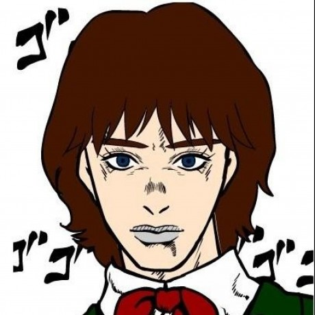
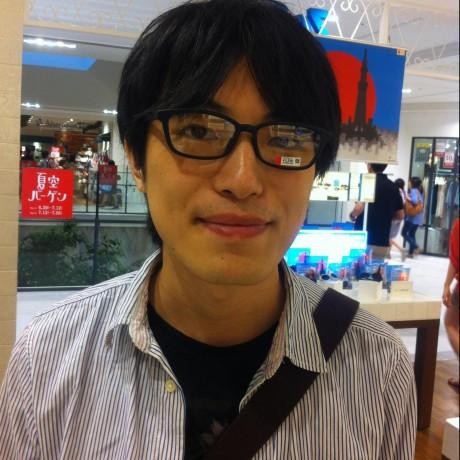
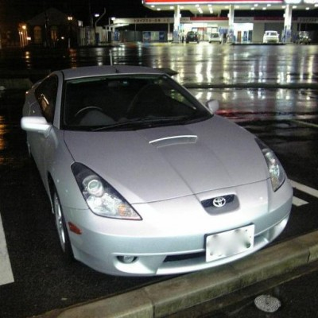

2019/11/3 (日)
富山国際会議場 大手町フォーラム
富山Ruby会議 参加登録
connpass募集ページからお申し込み下さい
懇親会 参加登録
本編終了後の懇親会はこちらからお申し込みください
日時・場所
2019/11/3 (日) 11:00-18:00
富山国際会議場 大手町フォーラム
Map
招待公演
松本 宗太郎
Soutaro Matsumoto
伊藤 淳一
Junichi Ito
Speakers
羽角 均
Hitoshi Hasumi

joker1007
清原 智和
Tomokazu Kiyohara
伊藤 浩一
Koichi ITO
黒曜
kokuyouwind
oratake
杉野 康弘
suginoy
タイムテーブル
10:20-10:55
開場・受付開始
10:55-11:00
オープニング
11:00-11:40
招待講演「○○からRubyへ」
伊藤 淳一
11:40-11:50
休憩
11:50-12:15
「読みやすいコードとRubyらしいコード」
黒曜
12:15-12:30
「初心者PHPerがRubyキメて思うこと」
oratake
12:30-13:50
昼休憩
13:50-14:15
「Crawler on Rails」
suginoy
14:15-14:40
T.B.D
joker1007
14:40-14:50
休憩
14:50-15:15
「北陸で Ruby なお仕事に携わるための3つの戦略」
清原 智和
15:15-15:40
T.B.D
伊藤 浩一
15:40-16:05
「mrubyでハローワールド！」
羽角 均
16:05-16:25
休憩
16:25-17:25
Lightning Talks
muryoimpl
ふぁらお加藤
相生ゆら
wtnabe
Yuka Kato
水尻裕人
よしだ たけひこ
羽角 均
17:25-17:35
休憩
17:35-18:15
招待講演「型なし言語のための型」
松本 宗太郎
18:15
クロージング
スポンサー(社名順)
会場スポンサー
懇親会スポンサー
スピーカースポンサー
招待講演スポンサー
運営

@kunitoo
@mugi_uno

@noboru_i